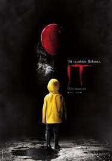
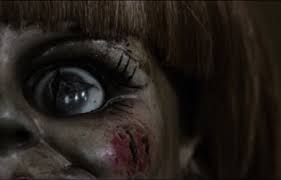

FANTASIA
"VER: HARRY POTTER Y LA PIEDRA FILOSOFAL"
Harry Potter es un niño huérfano criado por su tío Vernon y su tía Petunia que lo odian. Desde que era pequeño, estos siempre le han contado que sus padres murieron en un accidente de coche. El día de su decimoprimer cumpleaños, Harry recibe la inesperada visita de un hombre gigantesco de nombre Rubeus Hagrid. Este le revela que es, de hecho, hijo de dos poderosos magos y que él también posee extraordinarios poderes. Lleno de alegría, el chico acepta ir a estudiar a Hogwarts, el famoso colegio de magia y hechicería. Por fin, tiene la oportunidad de hacer amigos. Odiado por Severus Snape, profesor de Pociones, y protegido por Albus Dumbledore, director del colegio, Harry intentará dilucidar el misterio de la piedra filosofal.
"VER: HARRY POTTER Y LA CAMARA SECRETA"
Terminado el verano, Harry no ve la hora de abandonar la casa de sus odiosos tíos. Inesperadamente se presenta en su dormitorio Dobby, un elfo doméstico, que le anuncia que correrá un gran peligro si vuelve a Hogwarts.
"VER: HARRY POTTER Y EL PRISIONERO DE AZCABAN"
El tercer año de estudios de Harry en Hogwarts se ve amenazado por la fuga de Sirius Black de la prisión de Azkaban. Al parecer, se trata de un peligroso mago que fue cómplice de Lord Voldemort y que intentará vengarse de Harry Potter.
"VER: HARRY POTTER Y EL CALIZ DE FUEGO"
Hogwarts se prepara para el Torneo de los Tres Magos, en el que competirán tres escuelas de hechicería. Para sorpresa de todos, Harry Potter es elegido para participar en la competencia, en la que deberá luchar contra dragones, internarse en el agua y enfrentarse a sus mayores miedos

"VER: HARRY POTTER Y EL ORDEN DEL FENIX"
En su quinto año en Hogwarts, Harry descubre que muchos integrantes de la comunidad de magos no conocen la verdad acerca de su encuentro con Lord Voldemort. Cornelius Fudge, ministro de magia, designa a Dolores Umbridge como maestra de defensa contra de las artes oscuras porque cree que el profesor Dumbledore planea apoderarse de su trabajo. Pero sus enseñanzas son inadecuadas, por lo que Harry prepara a los estudiantes para defender la escuela en contra del mal.
"VER: HARRY POTTER Y EL MISTERIO DEL PRINCIPE"
Sexta entrega de la saga del joven mago, en la que Harry descubre un poderoso libro y, mientras trata de descubrir sus orígenes, colabora con Dumbledore en la búsqueda de una serie de objetos mágicos que ayudarán en la destrucción de Lord Voldemort
"VER: HARRY POTTER Y LAS RELIQUIAS DE LA MUERTE 1"
Harry, Ron y Hermione se marchan de Hogwarts para iniciar su misión más importante: tienen que destruir los horrocruxes, el secreto del poder y la inmortalidad de Voldemort, en los que el temido mago oscuro guarda los fragmentos de su alma.
"VER: HARRY POTTER Y LAS RELIQUIAS DE LA MUERTE PARTE 2"
Un enfrentamiento entre el bien y el mal espera cuando el joven Harry (Daniel Radcliffe), Ron (Rupert Grint) y Hermione (Emma Watson) se preparan para una última batalla en contra de Lord Voldemort (Ralph Fiennes). Harry se ha convertido en un joven fuerte que tiene la misión de librar al mundo del mal.
TERROR:

"VER AHORA EL CONJURO"
Ed y Lorrain Warren, reputados investigadores de fenómenos paranormales, se enfrentan a una entidad demoníaca al intentar ayudar a una familia que está siendo aterrorizada por una presencia oscura en su aislada granja.

"VER: LA NOCHE DEL DEMONIO"
Josh (Patrick Wilson), su esposa Renai (Rose Byrne) y sus tres hijos acaban de mudarse a una vieja casa. Pero, tras un desgraciado accidente, uno de los niños entra en coma y, al mismo tiempo, empiezan a producirse en la casa extraños fenómenos que aterrorizan a la familia

"VER LA NOCHE DEL DEMONIO 2"
Josh y Renai Lambert se han mudado con sus hijos a la casa de la madre de Josh, esperando olvidar el pasado y comenzar una nueva vida. Sin embargo, pronto experimentan visiones extrañas y fenómenos relacionados con los espíritus y un oscuro secreto

"VER LA NOCHE DEL DEMONIO 3"
La médium Elise Rainier acepta a regañadientes utilizar sus capacidades psíquicas para ayudar a una adolescente. La chica se ha convertido en el blanco de una peligrosa entidad sobrenatural. Precuela que tiene lugar antes de la posesión de la familia Lambert

"VER: IT(ESO)"
Varios niños de una pequeña ciudad del estado de Maine se alían para combatir a una entidad diabólica que adopta la forma de un payaso y desde hace mucho tiempo emerge cada 27 años para saciarse de sangre infantil
VER IT: CAPITULO 2"
En el misterioso pueblo de Derry, un malvado payaso llamado Pennywise vuelve 27 años después para atormentar a los ya adultos miembros del Club de los Perdedores, que ahora están más alejados unos de otros.

"VER: LA MONJA"
Una monja se suicida en una abadía rumana y el Vaticano envía a un sacerdote y una novicia a investigar lo sucedido. Lo que ambos encuentran allí es un secreto perverso que los enfrentará cara a cara con el mal en su esencia más pura.

"VER: ANABELLE"
John Form encuentra el regalo perfecto para Mia, su mujer embarazada: una preciosa muñeca 'vintage' llamada Annabelle. Una noche, una secta satánica les ataca brutalmente. Además, provocan que un ente maligno se apodere de Annabelle.
ACCION
"VER: RAPIDOS Y FURIOSOS 1"
Cada noche, Los Ángeles es testigo de alguna carrera de coches. Últimamente ha aparecido un nuevo corredor, todos saben que es duro y que es rápido, pero lo que no saben es que es un detective con la determinación de salir victorioso.
"VER: RAPIDOS Y FURIOSOS 2"
Brian O'Conner ayuda a la policía de Miami y se infiltra en el mundo de las carreras ilegales, esperando así redimirse ante sus superiores.
"VER: RAPIDOS Y FURIOSOS 3"
Sean Boswell siempre se ha sentido como un intruso, pero él se define a sí mismo a través de sus victorias como corredor callejero de autos. Su pasatiempo lo vuelve impopular con las autoridades, así que se va a vivir con su padre a Japón. Una vez allá, y aún más enajenado, Sean descubre un nuevo deporte emocionante, pero peligroso. Las apuestas son muy altas cuando Sean se enfrenta al campeón local y se enamora de su novia.

"VER: RAPIDOS Y FURIOSOS 4"
El fugitivo Dom Toretto (Vin Diesel) y el detective Brian O’Conner (Paul Walker) vuelven a encontrarse en Los Ángeles, pero sus relaciones no mejoran. Sin embargo, obligados a enfrentarse a un enemigo común, no les queda más remedio que unir sus fuerzas si quieren vencerlo. Después del atraco a un convoy, los dos protagonistas averiguan que si quieren vengarse, deberán llegar al límite de sus posibilidades al volante

"VER: RAPIDOS Y FURIOSOS 5"
Desde que Brian O;Conner (Paul Walker) y Mia Toretto (Jordana Brewster) sacaron a Dom Toretto (Vin Diesel) de la cárcel, se han visto obligados a huir y cruzar muchas fronteras para evitar a la policía. Atrapados en Río de Janeiro, una vez más tienen que darse a la fuga si quieren conservar la libertad. Pero los tres saben muy bien que la única posibilidad que tienen de poner fin a esta situación es enfrentarse de una vez por todas al empresario corrupto que quiere verlos muertos. Pero éste no es el único que les sigue la pista.

"VER: RAPIDOS Y FURIOSOS 6"
Desde que el robo de Dom y Brian en Río los dejó a ellos y a su equipo con mucho dinero, ellos se dispersan por todo el mundo; sin embargo, ellos tienen que vivir como fugitivos, incapaces de regresar con sus familias. Mientras tanto, el agente Hobbs ha estado persiguiendo a unos conductores mercenarios cuyo segundo al mando es alguien que Don conoce. Incapaz de detenerlo solo, Hobbs le pide ayuda a Dom y su equipo a cambio del perdón para todos.

"VER: RAPIDOS Y FURIOSOS 7"
Hace un año que Dominic y Brian fueron indultados y pudieron regresar a los Estados Unidos. Después de su llegada desean adaptarse a su nueva vida dentro de la legalidad, pero las cosas no son tan fáciles. Dom quiere acercarse a Letty y Brian se acostumbra a la vida en una urbanización con Mia y su hijo.

"VER: RAPIDOS Y FURIOSOS 8"
Con Dom y Letty de luna de miel, Brian y Mia retirados y el resto de la pandilla viviendo en paz, parece que todo está tranquilo. Sin embargo, una misteriosa mujer seducirá a Dom para adentrarlo en el mundo del crimen y traicionar a la pandilla. Ahora tendrán que unirse para traer a casa al hombre que los convirtió en una familia y detener a Cipher de desatar el caos.

"VER: RAPIDOS Y FURIOSOS 9"
Dom Toretto vive una vida tranquila junto a Letty y su hijo, pero el peligro siempre regresa a su vida. En esta ocasión, el equipo se enfrenta a un complot mundial orquestado por el asesino más temible del mundo: el hermano de Dom.
Abróchate los cinturones de seguridad: se acerca el final del camino...
ROMANCE
"VER: 50 SOMBRAS DE GREY"
Anastasia Steele es una joven e inocente estudiante de Literatura cuyo curso termina ese mismo año. Como favor hacia su mejor amiga, se verá inmersa en una tarea de periodista que no le agrada demasiado. El encargo consiste en entrevistar a uno de los más prometedores y ricos empresarios del momento: Christian Grey. Apabullada por su carisma, Anastasia caerá rendida a los pies del galán sin ninguna opción de resistirse.
"VER:50 SOMBRAS DE GREY MAS OSCURAS"
Tras su ruptura con Christian, aceptará un trabajo en una editorial de Seattle. Allí conocerá a Jack Hyde (Eric Johnson), su jefe, que poco a poco se irá encaprichando con ella e intentará seducirla a toda costa, para disgusto de Christian.
"VER: 50 SOMBRAS DE GREY LIBERADAS"
Anastasia Steele y Christian Grey se casan. Disfrutaron de una maravillosa luna de miel que tuvieron en Europa, recorriendo el mediterráneo y comprando bellísimos recuerdos. En esta luna de miel ocurren incidentes, como el incendio en la sala de ordenadores de GEH, paseos peligrosos y castigos, del cual en uno de sus encuentros Grey se siente mal por dejarle en la piel ciertas marcas a Ana con unas esposas, pero ella dice que no le molesta
"VER: A TRAVES DE MI VENTANA"
Raquel, quien lleva toda la vida loca por Ares, su atractivo y misterioso vecino. Lo observa sin ser vista y es que, muy a su pesar, no han intercambiado ni una palabra. Raquel tiene muy claro su objetivo: conseguir que Ares se enamore de ella. Pero ella no es una niña inocente y no está dispuesta a perderlo todo por el camino, y mucho menos a sí misma…
"VER: LOVE ROSIE"
love, Rosie cuenta la historia de dos íntimos amigos, Rosie (Lily Collins, Cazadores de sombras: Ciudad de hueso, El sicario de Dios) y Alex (Sam Claflin, Blancanieves y la leyenda del cazador, Los juegos del hambre: En llamas). Desde su infancia, habían confiado el uno en el otro y se habían contado sus secretos y confidencias. En su época del instituto, los dos protagonistas hicieron planes para ir juntos a la universidad, pero antes de que llegara el ese día, Rosie en una noche de locura y desenfreno junto a uno de los chicos más populares del instituto, se queda embarazada. Las intenciones de cada uno cambiaron radicalmente desde aquella noche, sin embargo su amistad permaneció por encima de todo. Mantuvieron su relación durante largos años, incluso en su vida adulta, cuando sus hijos eran ya adolescentes.
ANIMACION
"VER: BARBIE CASCANUECES"
Barbie y su hermana Kelly practican difíciles pasos de ballet para una importante presentación; sin embargo cuando la pequeña siente que no puede ejecutar correctamente los pasos de baile y quiere darse por vencida, Barbie le cuenta a Kelly una historia llena de la magia de la Navidad.

"VER: BARBIE RAPUNZEL"
La historia inicia mientras Barbie pinta un bello cuadro y su pequeña hermana Kelly se acerca para decirle que no sabe qué debe colocar en el lienzo, piensa que no tiene el suficiente talento que su hermana
"VER: BARBIE EN EL LAGO DE LOS CISNES"
La historia de Odette es la de una joven doncella que vive con su padre, un hombre humilde de oficio panadero que día a día se gana la vida ayudado de su hija. Un día común, mientras la jovencita se encuentra en el pueblo logra mirar a lo lejos a un unicornio que escapó del bosque encantado. Odette siente curiosidad y lo sigue para entrar al bosque encantado. Sin planearlo mueve un cristal mágico que nadie nunca había podido remover.
VER: BARBIE EN LA PRINCESA Y LA PLEBEYA
La princesa Annelise y la humilde costurera Erika, nacen cada una en situaciones muy diferentes pero físicamente son idénticas, como si fuese hermanas gemelas. Lo único que las diferencia es el color de su cabello: el de Annelise es rubio como el oro y el de Erika, oscuro como la noche. Por coincidencias del destino, ambas se conocen y se sorprenden al ver su gran parecido. Se hacen buenas amigas y ninguna sospecha que sus vidas habrán de unirse por una gran aventura.
"VER: BARBIE FAIRYTOPIA"
Fairytopia es un mundo mágico que existe justo detrás del arcoíris. En ese sitio vive Elina, un hada sin alas que sufría porque no podía volar como lo hacía cualquier hada de su mundo. Sin embargo un día su vida cambia ante una terrible enfermedad que afecta a todas las hadas y la desaparición de las hadas guardianes. Detrás de todo eso se encuentra la malvada Laverna, hermana gemela de la Reina de Fairytopia quien pretende apoderarse del control del reino.
"VER: BARBIE LA MAGIA DEL PEGASO"
La princesa Annika ha tenido una fuerte discusión con sus padres, los reyes, y decide escapar de su reino a pesar de las advertencias de su padre. Acude a un festival del reino, en donde conoce a un malvado hechicero de nombre Wenlock , que al verla, pide a la princesa que se case con él. En cuanto la princesa se niega, el malvado hombre acude ante los reyes para advertirles del hechizo que impondrá en todo el reino.
"VER: BEL DIARIO DE BARBIE"
Es la historia de Barbie adolescente y sus amigas con los problemas dentro de high school que tienen los chicos de esa edad; todo sucede cuando Barbie sufre una decepción amorosa por culpa de Todd y decide no deprimirse por ello.
"VER: BARBIE FAIRYTOPIA MERMAIDIA"
Esta segunda entrega de las aventuras en el mundo mágico detrás del arcoíris: Fairytopia, Elina, nuestra valiente hada ha recibido como premio unas grandes alas tras vencer a Laverna, pero en esta nueva aventura la malvada hada ha regresado buscando La Baya de la Inmunidad para que nada pueda destruirla.
"VER: BARBIE Y LAS 12 PRINCESAS BAILARINAS"
Genevieve la protagonista de ésta historia, vive en compañía de su padre, un rey viudo y sus 11 hermanas, todas ellas desordenadas y ruidosas, pero felices y unidas por una misma pasión: el baile.
"VER: BARBIE FAIRYTOPIA MAGIA ARCO IRIS "
Elina, el hada más valiente de Fairytopia ha logrado ser una heroína entre todas las hadas tras haber rescatado a las hadas guardianes y al príncipe Nalu. Pero sus aventuras están lejos de terminar. Junto que con amigo Bibble, su vida transcurre muy tranquila hasta que un buen día aparece en su casa una de las hadas guardianes para informarle que el hada gobernante pide que nombren un aprendiz y ella ha sido seleccionada. Habrán de transmitirle a Elina todos los conocimientos que debe tener un hada guardián.
"VER: BARBIE COMO LA PRINCESA DE LA ISLA"
una pequeña huérfana llamada Ro que vive en una isla desierta, desde pequeña fue cuidada por los animales del lugar quienes se convirtieron en sus amigos y su familia. Feliz creció Ro sin recordar su pasado ni la forma en cómo había llegado a aquella isla. Pero un día su vida cambia radicalmente cuando desembarca en aquel lugar el aventurero príncipe Antonio que exploraba tierras cercanas a su reino. Al conocerse inmediatamente sentirán un profundo amor.
"VER: BARBIE MARIPOSA"
Desde hace muchos siglos, las hadas mariposa deben esconderse por las noches pues los Skeezites las atemorizaban, ya que son monstruos que comen hadas. Sin embargo su miedo se fue cuando la reina Marabella iluminó por siempre todo Futterfield con sus poderes y su magia. Henna es la asistente de la reina pero la odia y le tiene una gran envidia; por lo que desea realizar un plan que le permita eliminar a la reina y ser ella quien domine; así que la envenena poco a poco.
"VER: BARBIE EN EL CASTILLO DE DIAMANTES"
Conoceremos la historia dos amigas llamadas Liana y Alexa, una historia llena de aventuras y de un lazo muy fuerte entre ellas llamado amistad que tuvo que pasar por muchas pruebas antes de llegar al Castillo de Diamantes. Ellas viven juntas en una humilde cabaña, solo se tienen la una a la otra y se apoyan incondicionalmente.
"VER: BARBIE PULGARCITA"
Barbie cuenta a sus alumnos de kindergarden la historia de la pequeña Pulgarcita, una pequeña Twillerbees que vive en un bosque lejos de la civilización, lleno de flores y magia. Pulgarcita y sus amigas se encuentran muy contentas disfrutando de su bosque cuando se dan cuenta que su hogar está a punto de ser destruido por tractores.
"VER: BARBIE EN EL LAS TRES MOSQUETERAS"
Corinne es una valiente joven cuyo sueño es convertirse en una mosquetera de la casa real de Francia, tal y como lo fue su padre: el gran mosquetero D’Artagnan. A pesar de que su madre no estaba muy segura de que ese era el camino adecuado, la apoya para que emprenda un viaje a París y se entreviste con la única persona que podría cumplir el anhelo de Corinne: el señor Tréville. Acompañada de su caballo, no corre con la mejor de las suertes, pero no se da por vencida.
"VER: BARBIE EN UNA AVENTURA DE SIRENAS"
Cuando Liah cumple 16 años suceden en su vida unos acontecimientos tan asombrosos que cambiarán su destino radicalmente. Misteriosamente descubre que puede respirar bajo el agua y que puede hablar con animales marinos. Todo parece salido de un cuento de hadas, hasta que su abuelo Brake le confiesa algo asombroso: Liah es hija de una sirena y de un ser humano, ella heredó la forma humana naciendo sin aletas.
"VER: BARBIE EN UNA AVENTURA DE SIRENAS 2"
Ha pasado un año desde que Liah conoció a su verdadera historia y supo que era una princesa sirena, conoció su reino en las profundidades del mar, hizo nuevos amigos y enfrentó a la maldad de Eris, la sirena que anhela robar el reino de Oceana.
"VER: BARBIE MODA MAGICA EN PARIS"
Barbie es despedida de la película que protagoniza y cuando espera que la gente la apoye se da cuenta que apoyan la decisión de que no esté más en ese film; muy triste quiere platicar con su novio Ken pero en un momento recibe una llamada de él diciéndole que desea terminar con ella. ¡Cuántas cosas malas para Barbie en un solo día!
"VER: BARBIE Y EL SECRETO DE LAS HADAS"
Barbie está a punto de estrenar su nueva película y acude con Ken, a la premiere. Todo va de maravilla hasta que a la salida un hada toma una fotografía de Ken y se la muestra a la Princesa Graciela a quien le han dado una poción de amor y se enamora al instante del novio de Barbie.
"VER: BARBIE ESCUELA DE PRINCESAS"
Blair es una chica humilde que debe trabajar para sacar adelante a su familia, puesto que su madre está enferma y su hermana es pequeña. Su vida cambiará cuando ve por televisión un concurso para entrar a la escuela de princesas y decide entrar.
"VER: BARBIE EN LA PRINCESA Y LA ESTRELLA POP"
La amistad es un valor único que pocas personas saben apreciar correctamente, y todas las películas de Barbie siempre poseen una enseñanza acerca de ello. Barbie y la estrella del pop no es la excepción. La historia es sobre dos chicas que tienen una vida muy diferente entre sí: Tori, una princesa de un reino mágico y Keira, una joven cantante de pop.
"VER: BARBIE Y LAS ZAPATILLAS MAGICAS"
Cuando Kristyn, que es una estudiante de ballet, compra unas nuevas zapatillas, no se imagina la magia que se desprenderán de ellas pues junto con su amiga Hailey, son transportadas a un mundo increíble donde todo es baile y la realización de sus más grandes sueños de bailarinas.
"VER: BARBIE MARIPOSA Y LA PRINCESA DE LAS HADAS"
Mariposa es un hada muy admirada y querida en todo Flutterfield porque entre ella y sus amigas lograron salvar a la reina de la muerte y a todas las hadas de ser devoradas por temibles monstruos que acechan por la noche. Por ello, los reyes han encomendado a Mariposa una nueva misión: acudir a Shimmerbell y buscar una reconciliación con las hadas de cristal, con las que las hadas mariposa han estado enemistadas durante mucho tiempo.
"VER: BARBIE EN LA PRINCESA DE LAS PERLAS"
Lumina es una sirena que es feliz viviendo en el mar y tiene como máximo anhelo ser una integrante de la realeza, ese sueño lo comparte con su amiga Kuda y siempre juega a que es una sirena princesa. Sin embargo, el castillo real del Océano, no es un lugar muy feliz ya que los reyes Nereo y Lorelei viven sumergidos en la tristeza al haber perdido a su hija recién nacida y heredera del trono.
"VER: BARBIE Y LA PUERTA SECRETA"
¿Qué harías si pudieras abrir una puerta que llevara a un mundo único e inigualable, donde se unen una sirena, una princesa y un hada para salvar la magia de un reino? En esta nueva película de Barbie, la protagonista Alexa es una princesa cuya pasión es la lectura ya que puede vivir a través de los libros aventuras increíbles; un día mientras se encuentra caminando por los bosques de su palacio, descubre una puerta que nunca nadie había notado antes, una puerta que inmediatamente le causa extrañeza y decide abrirla.